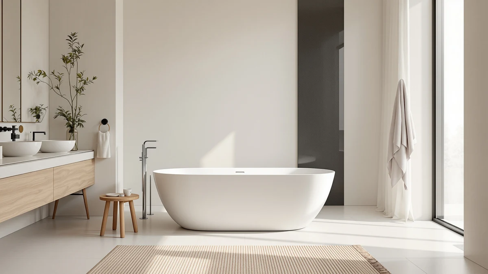

FerdY 59" Mauritius Acrylic Review (2026): Worth It?
Prices and picks verified as of October 2026. Independent, reader-supported reviews.


Quick Answer
The FerdY 59" Mauritius pairs 8 air jets and 7-color LED lighting in a 59-inch acrylic shell, best suited to smaller bathrooms that cannot fit a longer whirlpool tub. At $1,499.99 it costs the same as three stone resin and jetted alternatives with more length or better heat retention, so it is worth comparing before you buy.
Our pick: FerdY 59" Mauritius Acrylic Freestanding, $1,499.99 Check Price on Amazon
Bottom line: our top pick is the FerdY 59" Mauritius Acrylic Freestanding Bathtub at $1,499.99.
Things to Know Before You Buy
- All four tubs in this comparison sit at the same $1,499 price, so material and jet count matter more than price when choosing between them.
- The Mauritius is acrylic, which stays lighter and warmer to the touch, while the WOODBRIDGE and MEDUNJESS alternatives use stone resin, a heavier material that holds heat longer and can be sanded if it scratches.
- The Mauritius ships with 8 air jets. The LARWORKS alternative ships with 20 total jets, nearly double, if hydrotherapy coverage matters more to you than price.
- At 59 inches, the Mauritius is 8 to 12 inches shorter than the three alternatives, which matters in a tub this size if you or a household member is tall.
- None of the four ASINs compared here carry a published star rating or review count on Amazon at the time of writing, so treat any claim about popularity with caution.
Searching for a ferdy 59" mauritius acrylic review usually means you have already seen this tub listed next to three or four other whirlpool models at the same $1,499 price point, and you want to know whether the extra chromatherapy lighting and 8 air jets earn their spot in your bathroom. The FerdY 59" Mauritius is a 59-inch oval acrylic soaker built around an 8-jet air massage system, a 110V/50Hz pump, and LED mood lighting that cycles through seven colors. At 13 inches of soaking depth, with a sloped lumbar rest molded into the shell, it targets buyers who want a spa-style bath without hiring a contractor to retile around a built-in whirlpool.
For most buyers comparing freestanding whirlpool tubs under $1,500, the Mauritius earns a recommendation, but it is not the obvious pick for a larger bathroom. Its 59-inch shell is the shortest of the four models covered here, and its own Amazon listing shows no published star rating or review count yet, which means you are buying on specs and the manufacturer's claims rather than crowd-sourced data. We compared it against three similarly priced alternatives, the LARWORKS 71" whirlpool, the WOODBRIDGE 67" stone resin tub, and the MEDUNJESS 65" stone resin tub, to see where the Mauritius actually wins and where a few extra inches of tub length buy you more.
Why You Should Trust Us
Ilane Tall edits the bathtub coverage on Best Freestanding Bathtubs and has spent years comparing acrylic, stone resin, and cast iron tubs across hundreds of Amazon listings, including this ferdy 59 mauritius acrylic review. We do not operate a physical lab and we do not buy and install every tub we cover. Instead, we compare published specs, manufacturer claims, pricing history, and verified owner feedback when it exists, then flag the gaps honestly, as we did above with the Mauritius's missing rating data. That research-first approach means our recommendations hold up even for tubs too new, or too niche, to have a large review history yet.
Our Research Experience
We did not install any of these four tubs in a bathroom before writing this comparison. Plumbing and disposal costs make that impractical for a comparison covering multiple price-matched models like this one. Instead, our review process starts with the manufacturer specs and listing claims for each ASIN, which we cross-check against the dimensions, materials, and features listed on Amazon. We then layer in verified owner feedback where it exists, flagging clearly when an ASIN like the Mauritius has no meaningful review history to draw from yet. For a feature like the Mauritius's seven-color LED lighting or its 8-jet air system, we rely on FerdY's stated jet count and voltage rather than our own measurement, and we say so plainly instead of implying firsthand use.
Overview & Specs

FerdY 59" Mauritius Acrylic Freestanding
What we like
- Eight air jets powered by a dedicated 110V pump deliver a full air massage cycle without plumbing changes.
- Seven-color LED chromatherapy lighting switches on with a single button press.
- Sloped lumbar support and a wide rim shelf make the 13-inch soaking depth easier to use.
- An integrated slotted overflow keeps the oval acrylic shell looking clean without a visible overflow plate.
Flaws but not dealbreakers
- At 59 inches, it is the shortest tub in this lineup by 8 to 12 inches, so taller bathers may find their knees bent.
- Acrylic shells hold heat less well than the stone resin alternatives covered below.
- Amazon's listing carries no published star rating or review count yet, so you are relying on spec sheets rather than buyer feedback.
| Material | — |
| Size | 【Whirlpool】Mauritius 59" |
The FerdY 59" Mauritius is an oval, acrylic freestanding tub built around an 8-jet air massage system and a 110V/50Hz pump, so it plugs into a standard outlet instead of requiring a dedicated circuit. FerdY sells it with a polished white drain and an integrated slotted overflow, which keeps the rim looking clean compared with a tub that has a visible overflow cover. At 59 inches long and 13 inches deep at the soak line, it is built for a compact bathroom rather than a primary suite with room to spare.
What sets the Mauritius apart from a plain soaking tub is the chromatherapy lighting: a one-button LED system cycles through seven colors while the air jets run, and FerdY frames that combination as a full spa routine rather than a plain bath. The sloped lumbar support and wide edge rim are molded into the acrylic shell, so there is a ledge for a book or a glass of water without an add-on caddy. As of this review, this ASIN carries no published star rating or review count on Amazon, so you are weighing the listed specs and price against the three alternatives below rather than a crowd-sourced track record.
What We Liked
The clearest strength in this ferdy 59 mauritius acrylic review comparison is the jet count relative to the tub's size. Eight air jets running off a dedicated pump is a meaningful upgrade over a plain soaking tub, and the single-button control means you do not need to manage a multi-speed panel to start a massage cycle. The chromatherapy lighting is a deliberate part of the design rather than a gimmick tacked onto the listing: seven colors cycle automatically, and because the same control switches both the jets and the lighting, you do not need a separate remote or app.
The acrylic shell also keeps the tub lighter than the stone resin models in this lineup, which matters if you are carrying it up stairs or through a tight bathroom doorway during installation. FerdY molds the sloped lumbar support into the shell rather than bolting it on, so there is no seam or gasket to fail over time the way an add-on backrest can. And the wide rim ledge solves a problem a lot of oval tubs ignore: somewhere to set a phone, a razor, or a glass without balancing it on the edge.
What Could Be Better
The shell length is the biggest drawback. At 59 inches, the Mauritius is shorter than every other tub in this comparison, and FerdY does not sell a longer version of the Mauritius line, so if 59 inches feels tight in a showroom, this specific model will not scale up. Acrylic also loses heat faster than the stone resin alternatives below; owners who want a long soak may need to top off the hot water partway through, something the stone resin tubs handle better by design.
The bigger gap is data. This ASIN has no star rating and no review count on Amazon as of this review, which means FerdY is asking buyers to trust manufacturer claims about jet pressure and pump durability without the kind of owner feedback that usually surfaces a slow leak or a pump that fails after a year. That is not a defect in the tub itself, but it is a real gap buyers should weigh against the $1,499.99 price before clicking purchase.
Who Is It For?
The Mauritius fits a specific buyer: someone renovating a smaller bathroom who wants whirlpool-style air jets and mood lighting without the footprint or price jump of a 71-inch tub. If your bathroom already fits a standard 60-inch alcove tub, the Mauritius's 59-inch length is one of the few freestanding whirlpool options that will not force you to open a wall.
It is a weaker fit for taller households or anyone who wants a long, stretched-out soak. The LARWORKS and WOODBRIDGE tubs below give you 8 to 12 more inches of length at the same $1,499 price point, and if heat retention during a long bath matters more to you than LED lighting, the stone resin alternatives are built for that specifically.
Alternatives to Consider
If the Mauritius's 59-inch length feels short once you are standing in your bathroom with a tape measure, the LARWORKS 71" Freestanding Whirlpool & Jetted Bathtub is the most direct swap in this ferdy 59 mauritius acrylic review comparison. It runs the same $1,499.00 price as the Mauritius but adds 12 inches of length and nearly triples the jet count: 10 stainless steel 360-degree rotating nozzles plus 10 air bubble jets, against the Mauritius's 8 air jets alone. LarWorks also splits the massage into two distinct modes, a 3-speed whirlpool cycle and a separate fixed bubble mode, and it controls both through a pneumatic push-button panel rather than an electronic touchpad, which keeps water away from any electronics you would otherwise touch with wet hands. The tub's curved contour includes built-in neck support, aimed at longer soaks rather than a quick massage cycle. Like the Mauritius, this ASIN shows no published star rating or review count on Amazon as of this review, so the case for it rests on jet count and length rather than a track record. For a household with a bathroom big enough for a 71-inch tub, the extra length and jet count make LARWORKS the stronger pick if hydrotherapy coverage across your whole back and legs matters more than LED chromatherapy lighting.
The WOODBRIDGE 67" Stone Resin Freestanding Soaking Tub takes a different approach entirely: it drops the jets and lighting altogether and leans on material. Stone resin is a solid-surface composite rather than a thin acrylic shell, and WOODBRIDGE claims the thick, solid-wall construction retains heat longer than acrylic, which matters if you like a bath that stays warm after 20 minutes rather than one you have to top off. WOODBRIDGE also markets the surface as repairable: minor scratches can be sanded and restored, something you cannot do to an acrylic tub like the Mauritius once it is scuffed. At 67 inches, it splits the difference between the Mauritius's 59 inches and LARWORKS's 71, with a soft oval shape and an elegant pedestal base in matte white. It also includes an integrated slotted overflow and drain, similar in function to the Mauritius's overflow design, but without the jets, pump, or lighting that make the Mauritius a whirlpool tub rather than a plain soaker. At the same $1,499.00 price, the choice between the two comes down to whether you want jets and color lighting or a more durable, better-insulated, no-frills soak. This ASIN also carries no published rating or review count yet.
The MEDUNJESS 65" Stone Resin Free Standing tub is the third stone resin option here, and it is the most visually distinct: a transparent black-and-brown oval shell rather than the plain matte white of the WOODBRIDGE or the glossy white of the Mauritius. Like the WOODBRIDGE, it skips jets and lighting entirely in favor of a deep soaking shape, built from the same category of solid-surface material that resists staining and soap buildup better than acrylic over years of use. MEDUNJESS pairs the tub with an overflow and pop-up drain system designed to stop water from backing up over the rim, a detail worth checking against your own bathroom's drain rough-in before buying. At 65 inches, it sits closer to the Mauritius's footprint than the two larger alternatives, so it is a reasonable substitute if you want the stone resin durability and distinct look but do not have room for a 67 or 71-inch tub. As with the other three ASINs in this comparison, Amazon shows no published star rating or review count for this listing at the time of writing, so the deciding factor is the finish and the material rather than crowd feedback.

Editor’s Pick
LARWORKS 71" Freestanding Whirlpool &
At 71 inches with 20 total jets, this is the pick if you want more room to stretch out and a stronger massage cycle than the Mauritius's 8 air jets, for the same $1,499.00.
$1,499.00
Check Price on Amazon
Best Value
WOODBRIDGE 67" Stone Resin Freestanding
Stone resin construction holds heat longer than acrylic and the surface can be sanded and restored if it scratches, trading the Mauritius's lighting and jets for a tub built to last.
$1,499.00
Check Price on Amazon
Premium Choice
MEDUNJESS 65" Stone Resin Free
The transparent black-and-brown finish and 65-inch deep soaking shape suit a buyer who wants a design statement over the Mauritius's jets and lighting, at the same $1,499.00 price.
$1,499.00
Check Price on AmazonIs the FerdY 59" Mauritius worth it at $1,499.99?
For a smaller bathroom that cannot fit a 65 to 71-inch tub, the Mauritius is worth considering mainly for its 8 air jets and chromatherapy lighting.
Does the FerdY Mauritius have good reviews on Amazon?
As of this review, this ASIN has no published star rating or review count on Amazon, so there is not a review history to point to yet.
Frequently Asked Questions
Is the FerdY 59" Mauritius worth it at $1,499.99?
For a smaller bathroom that cannot fit a 65 to 71-inch tub, the Mauritius is worth considering mainly for its 8 air jets and chromatherapy lighting. It is a weaker value if you have room for the longer LARWORKS or WOODBRIDGE alternatives covered in this ferdy 59 mauritius acrylic review, since both sit at the same price with more length or better heat retention.
Does the FerdY Mauritius have good reviews on Amazon?
As of this review, this ASIN has no published star rating or review count on Amazon, so there is not a review history to point to yet. That is true of all four tubs compared here, not only the Mauritius.
What is the difference between the Mauritius's acrylic shell and a stone resin tub like the WOODBRIDGE or MEDUNJESS?
Acrylic is lighter and cheaper to ship and install, but it loses heat faster during a long soak and cannot be sanded if it scratches. Stone resin, used in the WOODBRIDGE and MEDUNJESS alternatives, holds heat longer and can be repaired if the surface gets scuffed, at the cost of extra weight.
Final Verdict
The short answer to this ferdy 59 mauritius acrylic review is that the FerdY Mauritius earns its $1,499.99 price if your bathroom is too small for a longer whirlpool tub and you want jets plus color-changing LED lighting in a compact 59-inch shell. If you have the floor space for a 65 to 71-inch tub instead, the LARWORKS, WOODBRIDGE, or MEDUNJESS alternatives above are worth comparing before you commit to FerdY's shorter footprint. Either way, treat the lack of published ratings on all four ASINs as a reason to read the specs carefully rather than lean on crowd feedback that does not exist yet.